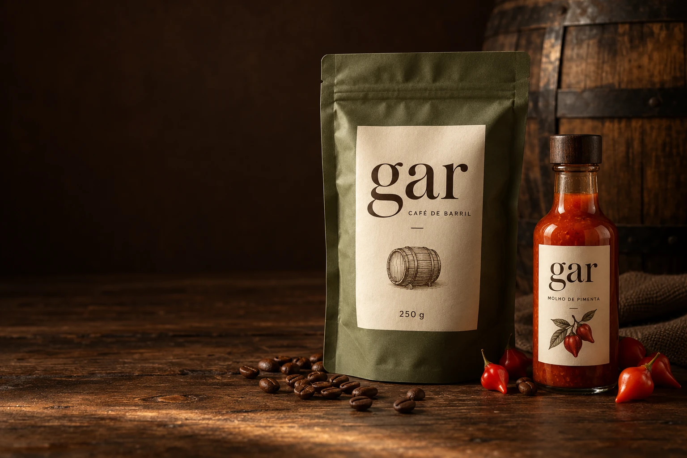

Primeiro, a pimenta.
A pimenta biquinho é a base do molho. Sua massa passa pelo barril de carvalho antes de seguir para a preparação do produto.
PIMENTA BIQUINHO
CAFÉ, COM UMA NOVA HISTÓRIA.
O café encontra o carvalho.
O carvalho guarda a história da pimenta.
E uma nova ideia chega à sua xícara.
ESCOLHA O SEU MOMENTO
Para descobrir algo novo.
Ou reencontrar o seu café de todo dia.
O QUE TORNA A GAR DIFERENTE
Nossa proposta nasce em Minas Gerais: aproximar produtores, valorizar o café e descobrir o que acontece quando ele encontra um barril com outra história para contar.
Entenda a nossa propostaA pimenta biquinho é a base do molho. Sua massa passa pelo barril de carvalho antes de seguir para a preparação do produto.
PIMENTA BIQUINHOCom a pimenta retirada e o barril preparado, os grãos de café verde passam pela madeira. Essa etapa acontece antes da torra.
PASSAGEM PELO CARVALHOO café segue para a torra e a embalagem. Café e molho chegam à mesa como dois produtos da mesma ideia.
DOIS PRODUTOS, UMA HISTÓRIAConceito em desenvolvimento. Os tempos de barril e o perfil sensorial serão definidos por testes.
O ENCONTRO COMPLETO
Conheça os dois lados da GAR com o nosso kit: Café de Barril 250 g + Molho de Pimenta 150 mL.
CLUBE GAR
Cada R$ 1 em produtos vale 1 ponto.
Junte 100 pontos e troque por R$ 3 de desconto
para o seu próximo momento GAR.
Faltam 100 pontos para o primeiro resgate.
ANTES DO PRIMEIRO GOLE
Não. A proposta é usar, antes da torra, um barril que já recebeu a massa de pimenta. Ela é retirada e o barril é preparado antes de receber os grãos. Café e molho são produtos separados.
A proposta usa pimenta biquinho BRS Moema, escolhida por não apresentar pungência. Ainda assim, o sabor final do café depende de testes. Não prometemos ardência, frescor ou notas sensoriais antes dessa validação.
O Café de Barril inclui a passagem pelo carvalho que recebeu pimenta. O Café de Origem segue sem essa etapa. Os dois são apresentados em pacotes de 250 g, em grãos ou moídos para coado.
O cupom GAR15 dá 15% na primeira compra, inclusive sobre o preço do kit, que já tem 3% de desconto. Pontos do clube e GAR15 não são usados juntos. No clube, 100 pontos valem R$ 3, com resgate limitado a 10% do valor dos produtos. O frete não acumula pontos nem recebe descontos.
Esta loja é uma demonstração para a disciplina de Gestão dos Negócios Agroindustriais. Produtos, embalagens e pedidos ilustram a proposta da empresa. Nenhuma cobrança ou entrega é realizada. A simulação usa frete de R$ 25 por pedido.